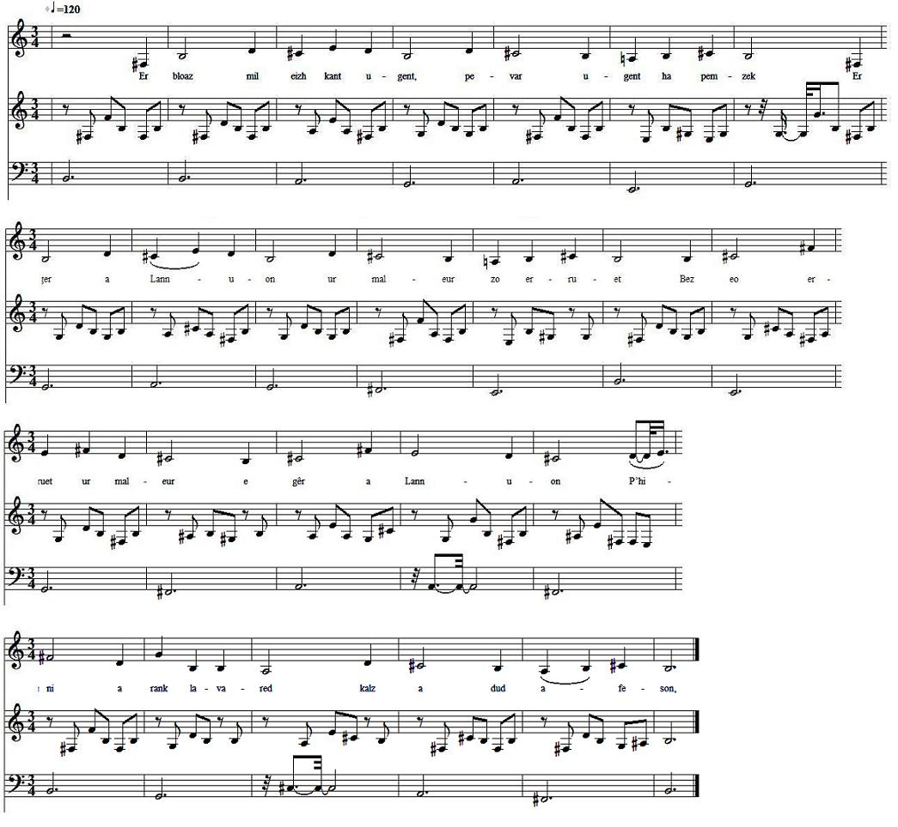

|
PERRINAIK LANHUON Er bloaz mil eizh kant ugent, - pevar ugent ha pemzek? - (1) Er ger a Lannuon ur maleur zo erruet Bez eo erruet ur maleur e gêr a Lannuon Phini a rank lavared kalz a dud a-feson, Gant daou maltouter (2) yaouank en em gav da goaniañ Evit terriñ ar favenn (3) en em divertisañ Pa oa debret hag evet hag o skodenn paeet, Ar vatez Perinaïk o deveus goulennet, Ar chwreg-mañ a oa ur chwreg vat, karget a vadelezh Hag a elum ar gouloù he letern dhe matez. - Dalit-ta Perrinaik, dalit ar gouloù It da ambroug an aotrounez dan nech gant ar ruioù - Mar karfech, Perrinaik, sentiñ och hor chomzoù Chwi a vouchfe ho letern, a lazhfe ho koulou. - Penaos, emezhi, Aotrounez, mont dho kas dar gêr, Pa ma mouchet va letern ha lazhet va gouloù sklaer? - Mar karfech Perrinaïk dond ganeomp-ni dhon ti Ni rofe deoch da tañvañ deus an tri sort gwin. - Salhokras oAotrounez, ho trugarekaat a ran E ti va mestrez bevan, pa garan, a evan.- - Sonet an hanter-nos, lavar an aotroù dhe bried, Ar vatez Perrinaik dar gêr ne zistro ket! - E-kichen gouent Zant-Jozef eo ha chavjont marv, Ar gouloù en he letern dirazhi a zo bev. - O va matez Perrinaik, ni a zo glacharet O weled pebezh maleur ganeoch zo erruet. Rag chwi oa ur plach honest hag ur plach a-feson Brava plachik a varche war paveoù Lannuon.(4) Er chapel Santez Ana ema he foltret. Ar gouloù en he letern dirazhi zo marvet. (5) Transcription KLT: Chr.Souchon (c) 2009 |
PERRINE DE LANNION En l'an mille huit cent vingt - quatre-vingt quinze []?- (1) Un malheur est arrivé au bourg de Lannion, Un malheur est arrivé au bourg de Lannion, Et cela, au dire de bien des gens dignes de foi, Du fait de deux jeunes douaniers (ou maltotiers], venus dîner (2) Pour tirer les rois en se divertissant.(3) Après avoir mangé et bu et payé leur écôt, Ils ont demandé la servante Perrine. Or la patronne était une femme droite et pleine de bonté. Elle allume la mêche de la lanterne de la servante.! - Tenez Perrine, prenez cette lanterne! Allez raccompagner ces messieurs jusquen haut des rues. - Si vous vouliez, Perrine, suivre nos instructions, Vous moucheriez votre lanterne et éteindriez votre lumière. - Comment, Messieurs, vous accompagnerai-je jusquà chez vous Si ma lanterne est mouchée et ma lumière vive éteinte ? - Si vous vouliez, Perrine, nous suivre chez nous Nous vous ferions goûter à trois sortes de vin. - Excusez-moi, Messieurs, je vous remercie. Jhabite chez ma patronne, et je bois quand cela me plait. - Minuit a sonné, dit le patron à sa femme, Notre servante Perrine nest toujours pas rentrée! - Cest près du couvent Saint-Joseph quils la trouvèrent morte, La lumière de sa lanterne devant elle, toujours allumée. - Oh, Perrine, ma servante, nous avons bien du chagrin De voir le genre de malheur qui vous est arrivé. Car vous étiez une fille honnête, une fille comme il faut, La plus jolie des filles qui marchait sur les pavés de Lannion.- (4) Dans la chapelle de Sainte Anne on a mis son portrait. La lumière de la lanterne devant elle sest éteinte. (5) |
PERRINE OF LANNION In the year eighteen hundred twenty, - ninety five [?] -(1) In Lannion town a terrible mishap happened, A terrible mishap in Lannion town Which must, so say many trustworthy people, Be ascribed to two young customs [or inland revenue] officers Who had that nignt (2) Twelfth Night cake carousing.(3) After they had eaten and drunk their fill and paid the bill They asked for the maid Perrinaïk. The innkeeper's wife, a good woman who thought of no evil Lit up herself the candle in the lantern of her maid. - Here you are, Perrinaïk. Here is your light. See these gentlemen up the streets to their hotel. - If you cared, Perrinaïk, to listen to our words, You would snuff this lantern and put out this light of yours. - What's the use, Gentlemen - said she - of my seeing you home If I snuff out my lantern and put out my bright light? - If you cared, Perrinaïk, to come up with us to our room, We would let you taste three kinds of wines. - With your leave, gentlemen, I thank you: My employer caters for me and I drink whenever I want. - It is past twelve o'clock - the innkeeper said to his wife - Our maid, Perrinaïk, is not yet back home.- Beside the Convent Saint Joseph she was found dead, With, before her, the light in her lantern still burning. - O my maid Perrinaïk, we are so sorry, Considering what kind of misfortune befell you. For you were a decent girl and a honest woman, The loveliest girl on Lannion's cobblestones. (4) In Saint Anne's chapel hangs her portrait The light in her lantern went out. (5) |
|
(1) Le texte breton original n'est pas clair:"l'an mil huit cent vingt quatre-vingt quinze". (2) Douaniers ou percepteurs, selon l'époque. (3) Le texte breton parle de "casser la fève". (4) On trouve cette curieuse formulation de la reconnaissance sociale dont jouit une femme, dans d'autres chants, par exemple, dans l'avant-dernière strophe de "Yannick Bon-Garçon" collecté par Luzel. (5) Dans la note qui suit le pendant de ce chant dans le "Barzhaz Breizh", La Villemarqué explique que l'extinction de la lampe eut lieu longtemps après l'assassinat. "Le temps où la jeune fille eût cessé de vivre si elle fût restée sur la terre, était arrivé." Cela explique peut-être la double date au premier vers. Le chant du "Barzhaz", quant à lui, date l'événement de 1693. |
(1) The Breton original is far from clear: "In the year eighteen hundred twenty ninety five". (2) Customs officers or taxmen, depending on the time. (3) The Breton text has "breaking the charm (bean)". (4) This curious expression of a woman's social acknowledgment is also found in other songs, for instance in the last verse but one of the ballad collected by Luzel, "Yannick Bon-Garçon". (5) In the note following the counterpart of this song in the "Barzhaz Breizh", La Villemarqué explains that the extinction of the lampe occured long after the murder. "The time the girl would have lived, but for her assassination, was expired". This accounts perhaps for the double dating of the event in the first verse. The "Barzhaz" song dates it to 1693. |